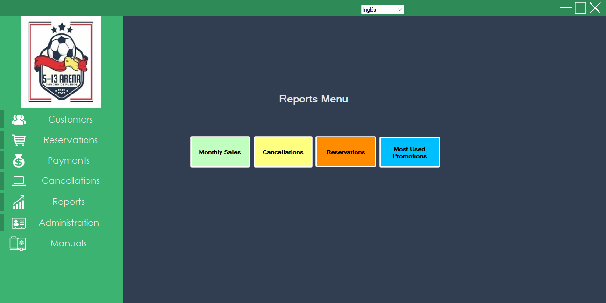
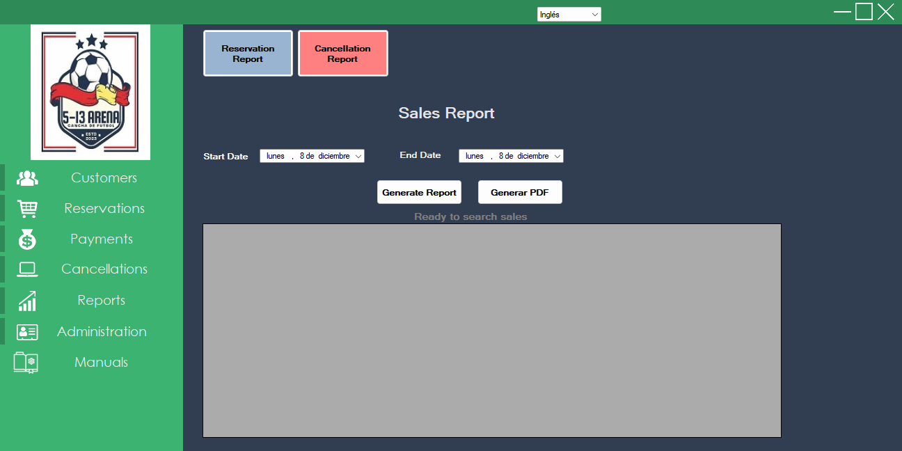
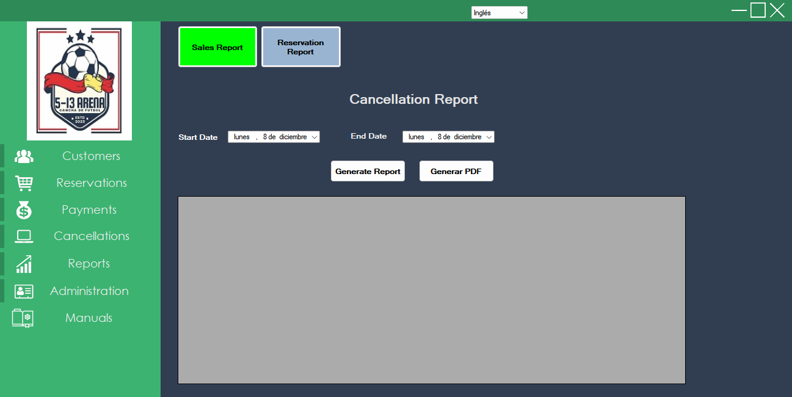
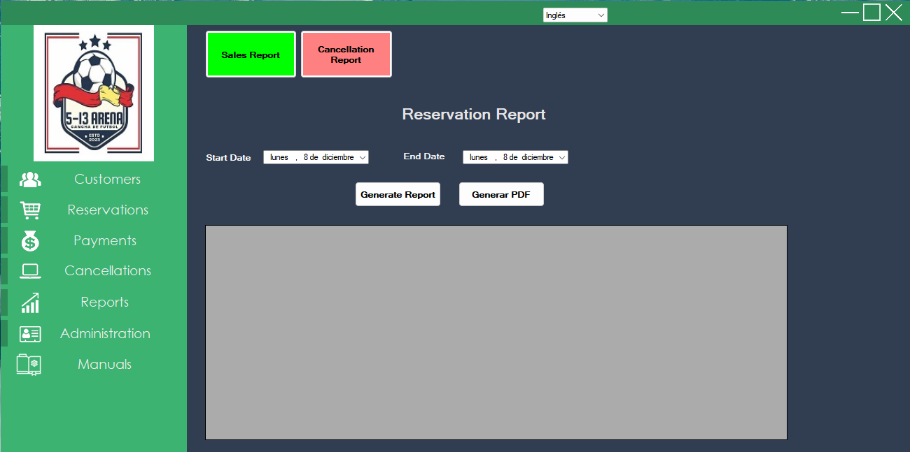
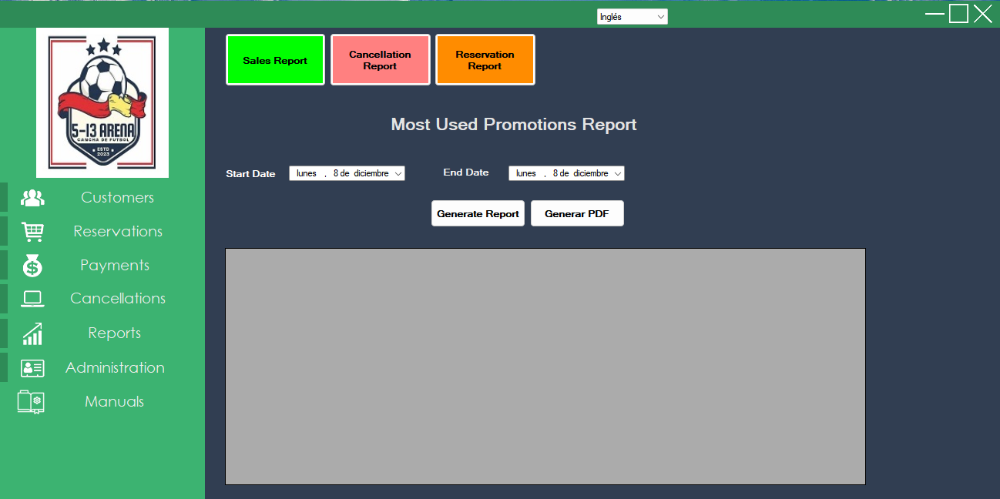

The system provides several reports to analyze operations. Reports can usually be viewed on screen, exported or printed.

Select the From Date and To Date range and click Generate Report. The report shows the list of operations and the total sales amount in the period. You can download the report for further analysis.

Works similarly: select the date range and generate the report. It shows all cancellations within the period. The report can be exported.

Allows you to analyze field occupancy for specific time periods. It includes an Print button to obtain a hard copy or PDF.

Shows a ranking of promotions by number of uses in the selected period. Interaction and download options are similar to the other reports.
